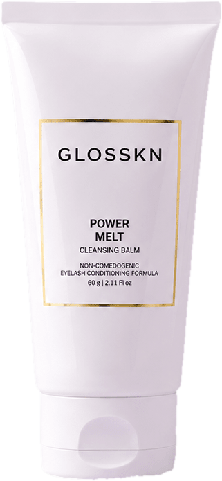
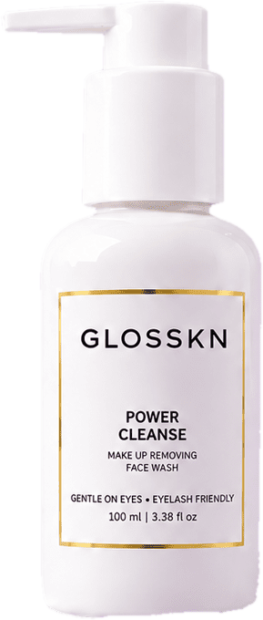

Waterproof mascara gone in seconds. No rubbing!
— Simran K.
The balm turns into a silky oil the moment it meets your skin.
Oils bind long-wear makeup, waterproof mascara & SPF — like dissolves like.
A built-in emulsifier turns it milky with water, so it rinses clean. No greasy film.
Tired night? Melt, rinse, done — no second cleanse needed.
eye-area skin
≈ 0.5 mm
rest of the face
≈ 2 mm
The skin around your eyes is up to 4× thinner. Daily rubbing can show up as dark circles, pigmentation and lash fall.
Power Melt does the work, not your fingers. Gentle enough to use with eyes open — and the eyelash conditioning formula leaves lashes soft.
Skin thickness & rubbing-related pigmentation: periorbital hyperpigmentation review, PMC7992473.
Oleic-rich & antioxidant; shown to boost skin hydration.
A liquid wax that mimics your skin's own sebum; supports the barrier.
Omega 9 + 6 with natural vitamin E, for soft, cushioned skin.
A skin-identical lipid: lightweight, never greasy, never stripped.
+ vitamin E · water-free formula · a gentle non-ionic cleanser from the same family used in tear-free baby formulas
Refs: moringa — Cosmetics 2021, 8(1):2 · jojoba — Lin et al., Int J Mol Sci 2018 · plum kernel oil — Biomolecules 2020 · squalane — Cosmetics 2025.

No double cleansing required.
Massage · Rinse · Done
Hard tap water is common across India. Its calcium & magnesium make sulfate cleansers cling to skin — and that residue weakens your barrier.
Sulfate wash + hard water
Residue stays on skin, barrier stressed.
Power Cleanse
No sulfates + EDTA binds minerals, so it rinses clean.
Ref: Danby et al., "The effect of water hardness on surfactant deposition after washing and subsequent skin irritation", J Invest Dermatol 2018.
healthy skin
harsh soaps
≈ 4.7is where healthy skin sits
Alkaline washes push skin's pH up, leaving it tight and unsettling its barrier & natural flora. Power Cleanse is pH-balanced to work with your skin, not against it.
Ref: Lambers et al., "Natural skin surface pH is on average below 5, which is beneficial for its resident flora", Int J Cosmet Sci 2006.
Draws water into skin & supports barrier recovery.
Skin-identical softness, so skin never feels stripped.
A soothing, hydrating plant gel.
Antioxidant-rich; its seeds are traditionally used to clarify water.
Ferulic acid & γ-oryzanol, antioxidants prized in Asian skincare.
Refs: glycerin — Darlenski, Fluhr & Surber, Br J Dermatol 2008 · aloe — Aloe vera in dermatology: a brief review · rice — γ-oryzanol & ferulic acid literature.
Made with a mild non-ionic cleanser from the same family used in tear-free baby formulas — gentle enough to use with eyes open.